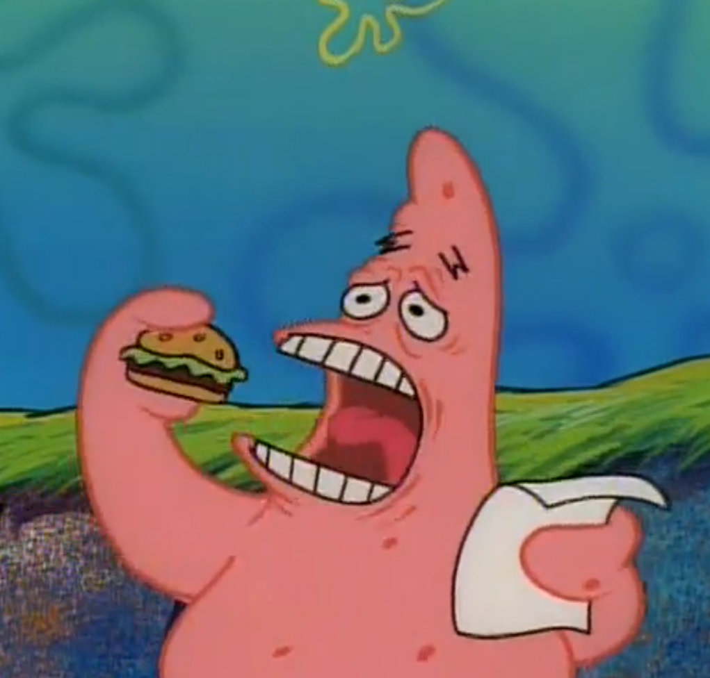
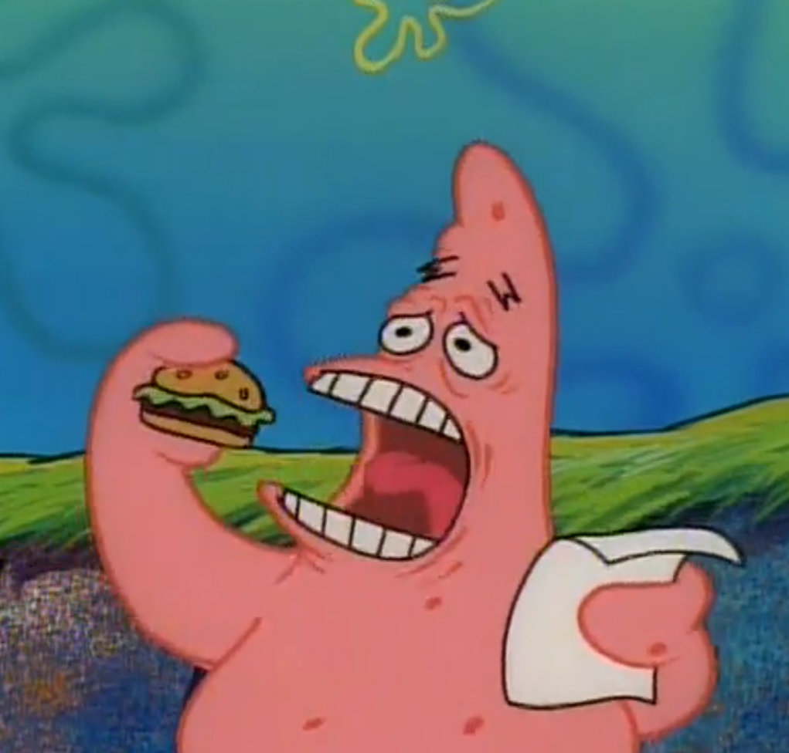

SpongeBob SquarePants (or simply SpongeBob) is an American animated comedy television series created by marine science educator and animator Stephen Hillenburg for Nickelodeon. It chronicles the adventures of the title character and his aquatic friends in the fictional underwater city of Bikini Bottom. The fifth-longest-running American animated series, its high popularity has made it a media franchise. It is the highest rated Nickelodeon series and the most profitable property for Paramount Consumer Products, generating over $13 billion in merchandising revenue as of 2019.[4][needs update] Many of the series's ideas originated in The Intertidal Zone, an unpublished educational comic book Hillenburg created in 1989 to teach his students about undersea life.[5] He began developing SpongeBob SquarePants into a television series in 1996, and in 1997, a seven-minute pilot was pitched to Nickelodeon. The network's executives wanted SpongeBob to be a child in school, but Hillenburg preferred SpongeBob to be an adult character.[6] He was prepared to abandon the series, but compromised by creating Mrs. Puff and her boating school so SpongeBob could attend school as an adult.[7]
 
